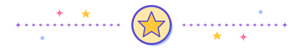

Funcionária Ideal
Acredito que uma boa profissional não se limita a cumprir tarefas: ela busca entender, aprender e contribuir.
Tenho formação técnica em hospedagem, trabalho na recepção de um hotel e estudo Análise e Desenvolvimento de Sistemas.
Gosto de unir esses dois mundos.
No atendimento, aprendi a ouvir com atenção, manter a calma e resolver o problema da pessoa antes que ele cresça.
Na tecnologia, estou aprendendo a dividir um problema grande em etapas pequenas, testar e ajustar até funcionar.
Este site é um exemplo: estou construindo cada parte dele em HTML e CSS, praticando o que aprendo na faculdade.
Se você procura alguém que enxerga o lado humano e o lado técnico de um problema, vamos conversar!